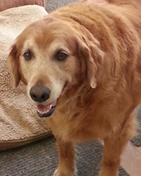

Hi everyone! My name is Abby.
My mom saw me at a pet adoption event 11 years ago and fell in love with me immediately. This was something special since she only had Golden Retrievers previously. However, Mom had problems convincing the family whether to adopt me but the family came around after meeting me. When I joined the family, Mom had 2 older Golden Retrievers siblings, Frankie and Johnnie. Unfortunately Frankie had cancer and died shortly after I was adopted. A few years later, Mom brought home Ben and Jerry. They were babies and I had my hands full in trying to teach them. They liked to double team me and Mom. They are inseparable and when I tried to play with one, the other would get involved. I got trampled on so many times! Johnnie couldn’t help me much as he wasn’t feeling well at the time. He died a few months later.
Hi I’m Ben
Don’t believe everything Abby said. I didn’t run her over ……much. I was just a puppy and liked to play, especially with Jerry. We sometimes got carried away. But that was years ago. I’m older and more relaxed. I still want all the attention though. But I am gentle and careful around her. What Abby didn’t tell you is that she is spoiled. Mom says Abby is a “Prima Donna”. I’m not sure what that means but Abby likes things her own way. But Abby will listen when Mom tells her to do something. I like my treats, being petted and giving kisses. I always greet Pampered Pets ladies with a stuffed animal in my mouth. I look forward to them playing with me every day.
My name is Jerry
I was extremely shy and initially I needed my brother around me when I came to live with Mom. Now, I’m not shy and I no longer run over Abby. I’m first to greet the ladies from Pampered Pets. I look forward to their visit and the loving they give me. I’m not like Ben who demands all the attention but I will push him aside when it’s my turn. I also keep tabs on Mom and love to get under her feet when she is sitting down. I help protect the yard and let Mom know when there is something in the yard. I also like playing with Ben, chasing him in the yard and taking the squeaky toy.

THANK YOU PAMPERED PETS FOR TAKING GOOD CARE OF US AND LOOKING FORWARD TO YOUR NEXT VISIT!